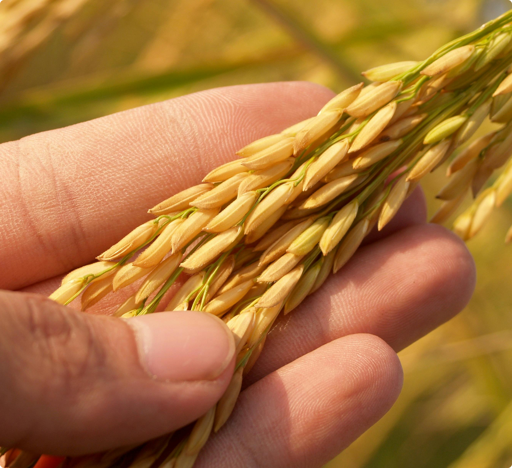
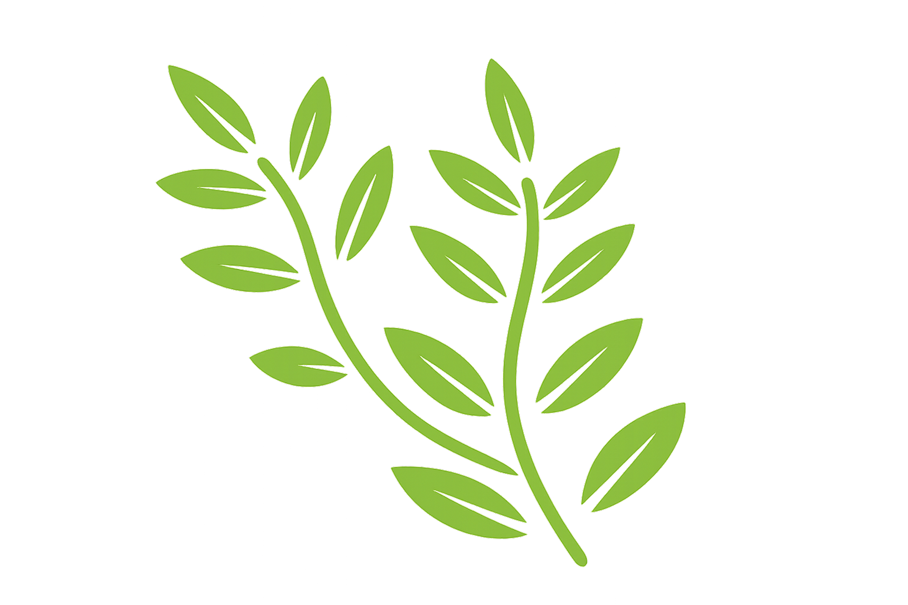

.png)

The Art of
Purity
Rooted in tradition, committed to purity.
Naturally better, since 1965.



A Half-Century
of Heritage
The journey of Toor Organic started with a simple dream - to offer world-class rice with the purity and richness of Indian agriculture. With years of dedication, trust, and passion for quality, we have built a brand that stands for excellence in every grain. By working closely with experienced farmers and using modern milling and packaging techniques, we ensure that every pack of Toor Organic rice delivers consistent taste, long grains, natural aroma, and premium cooking quality. Today, our journey continues with one goal - bringing happiness to every kitchen through the finest rice experience.
Why Choose Us
Finest Premium Quality
Carefully selected, naturally aged grains known for exceptional length and aroma.
Farm Fresh & Pure
Sourced directly from trusted farms where purity is maintained at every single stage.
Naturally Aged
Proper aging enhances texture and aroma, delivering a royal dining experience.
Advanced Processing
Modern technology and hygienic packaging ensure every pack remains fresh and healthy.
Rich Aroma
Famous for natural fragrance and fluffy, non-sticky grains after cooking.
Healthy & Nutritious
Naturally processed to retain essential nutrients for your daily wellbeing.
Excellence in Every Grain - Our Identity, Tradition, and Pride.
The Vision
At Toor Organic, our vision is to become a globally trusted name in premium-quality rice by delivering purity, rich aroma, and unmatched taste in every grain. We aim to preserve the true essence of Indian farming while setting new standards of excellence, quality, and customer trust in the rice industry.
The Mission
Our mission is to provide the finest and naturally aged rice that reflects superior quality, authentic flavor, and nutritional value. From carefully selecting crops from trusted farms to maintaining hygienic processing and advanced packaging standards, we are committed to delivering perfection from farm to table. We believe every family deserves rice that is pure, healthy, aromatic, and truly premium in quality.